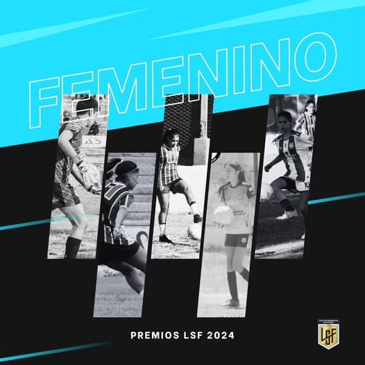
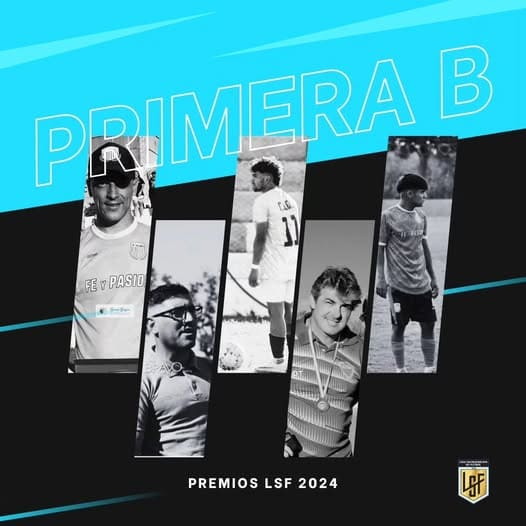
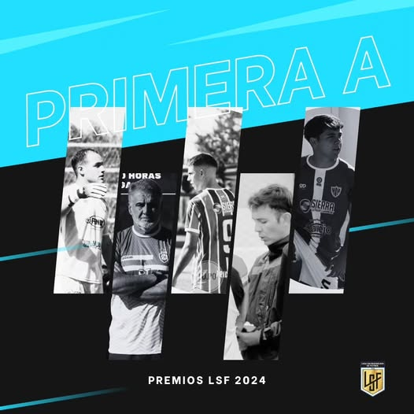

Nuestras Divisiones Inferiores
Nuestras Divisiones Inferiores también tuvieron su merecido reconocimiento a los jugadores que se destacaron a lo largo del 2024. Sabemos que detrás de cada premio individual hay un equipo que lo hace posible, y a través de cada uno de ellos destacamos a cada equipo, y todos los equipos, que dieron el máximo por el compañero y por su club.
𝙎𝙚𝙥𝙩𝙞𝙢𝙖 𝘿𝙞𝙫𝙞𝙨𝙞𝙤́𝙣
Tomas FERREYRA (Mejor Arquero/Pedal)
Stefano CONSTANZO (Mejor Arquero/Pedal)
Santiago SOLA (Goleador/SL Gonzaga)
Ver más en Facebook𝙎𝙚𝙭𝙩𝙖 𝘿𝙞𝙫𝙞𝙨𝙞𝙤́𝙣
Enzo ALARCÓN (Mejor Arquero/Pedal)
Lautaro PINTAT (Mejor Arquero/Pedal)
Leonardo PAEZ (Goleador/A. Pilares)
Agustín MUÑOZ (Goleador/Calle Larga)
Ver más en Facebook𝙌𝙪𝙞𝙣𝙩𝙖 𝘿𝙞𝙫𝙞𝙨𝙞𝙤́𝙣
Manuel HERNANDEZ (Mejor Arquero/Balloffet)
Tobias CONTRERAS (Goleador/SM Salto de las Rosas)
Ver más en Facebook𝙍𝙚𝙨𝙚𝙧𝙫𝙖 𝘼
𝙍𝙚𝙨𝙚𝙧𝙫𝙖 𝘽
Marcos PEREZ (Mejor Arquero/A.Pilares)
Marcos CAMILETTI (Mejor Arquero/A.Pilares)
Nicolas SANTANDER (Goleador/25 de Mayo)
Derly APPIOLAZZA (Goleador/Las Malvinas)
Ver más en FacebookEl Fútbol Femenino
El Fútbol Femenino reconoció a sus jugadores destacadas, conocé el 11 Ideal del 2024.
- 𝙈𝙚𝙟𝙤𝙧 𝘼𝙧𝙦𝙪𝙚𝙧𝙤: Fatima AGUIRRE
- 𝙂𝙤𝙡𝙚𝙖𝙙𝙤𝙧: Agustina SALINAS
- 𝙍𝙚𝙫𝙚𝙡𝙖𝙘𝙞𝙤́𝙣: Candela LUNA
- 𝘿𝙏 𝘿𝙚𝙨𝙩𝙖𝙘𝙖𝙙𝙤: Nicolas LEAL (Seleccionado LSF)
𝙀𝙦𝙪𝙞𝙥𝙤 𝙄𝙙𝙚𝙖𝙡:
- Fatima AGUIRRE (D.Argentino)
- Julieta TORRES (D. Argentino)
- Luján ANTUNEZ (Pedal)
- Ana GONZALEZ (Porvenir)
- Julieta OYOQUIPA (Pedal)
- Eugenia ROCHA (Porvenir)
- Silvana ZARATE (D.Argentino)
- Florencia OYOQUIPA (Pedal)
- Agustina SALINAS (Pedal)
- Angeles ASTORGA (Porvenir)
- Bianca GONZALEZ (Porvenir)
El Ascenso de Nuestra Liga
El Ascenso de nuestra Liga tuvo un gran año, y reconocimos a los jugadores que se destacaron en el 2024 en cada uno de sus equipos.
- 𝙈𝙚𝙟𝙤𝙧 𝘼𝙧𝙦𝙪𝙚𝙧𝙤: Brian CABRERA
- 𝙂𝙤𝙡𝙚𝙖𝙙𝙤𝙧: Gabriel LEGUIZAMON
- 𝙍𝙚𝙫𝙚𝙡𝙖𝙘𝙞𝙤́𝙣: Lautaro BUSTOS
- 𝘿𝙏𝙨 𝘿𝙚𝙨𝙩𝙖𝙘𝙖𝙙𝙤𝙨: Cristian AGOSTINELLI y Cristian RODRIGUEZ
𝙀𝙦𝙪𝙞𝙥𝙤 𝙄𝙙𝙚𝙖𝙡:
- Brian CABRERA (A. Pilares)
- Tobias FAVARI (C. Benegas)
- Luis DIAZ (A. Pilares)
- Lucas TROLLAN (Goudge)
- Gastón LEGUIZAMÓN (Goudge)
- Rodrigo ROBERT (A. Pilares)
- Ignacio GARAZZINO (Goudge)
- Oscar OLMEDO (A. Pilares)
- Santiago ARAUJO (25 de Mayo)
- Gabriel LEGUIZAMÓN (Goudge)
- Fausto TARIFA (Goudge)
Primera A
La Primera A tuvo un año de apasionante competencia, donde cada Torneo se definió en la última fecha de cada certamen con muchos candidatos como hacía tiempo no lo vivíamos, y sin dudas fue posible por sus protagonistas que ayer tuvieron su merecido reconocimiento.
- 𝙈𝙚𝙟𝙤𝙧 𝘼𝙧𝙦𝙪𝙚𝙧𝙤: Esteban PELAYES
- 𝙂𝙤𝙡𝙚𝙖𝙙𝙤𝙧: J. Cruz HERNANDEZ
- 𝙍𝙚𝙫𝙚𝙡𝙖𝙘𝙞𝙤́𝙣: Fausto SOTELO
- 𝘿𝙏𝙨 𝘿𝙚𝙨𝙩𝙖𝙘𝙖𝙙𝙤𝙨: Miguel BUXÓ y Agustín CAÑADAS
𝙀𝙦𝙪𝙞𝙥𝙤 𝙄𝙙𝙚𝙖𝙡:
- Esteban PELAYES (Huracán)
- Nicolas LEAL (Porvenir)
- Sebastian GARAY (Pedal)
- Martín ORTEGO (Rincón del Atuel)
- Joaquin ALFONSO (D.Argentino)
- Santiago CARDOSO (Pedal)
- Diego MARTINEZ (Calle Larga)
- Gonzalo RODRIGUEZ (Quiroga)
- Jonathan MIRANDA (Balloffet)
- Juan Cruz HERNANDEZ (Pedal)
- Mauricio CASCÓN (Huracán)
- Javier BARROSO (Rincón del Atuel)
- Armando ALES (Villa Atuel)